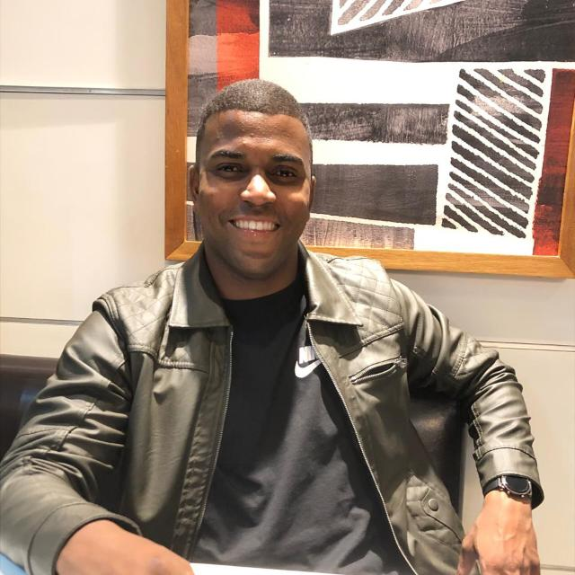
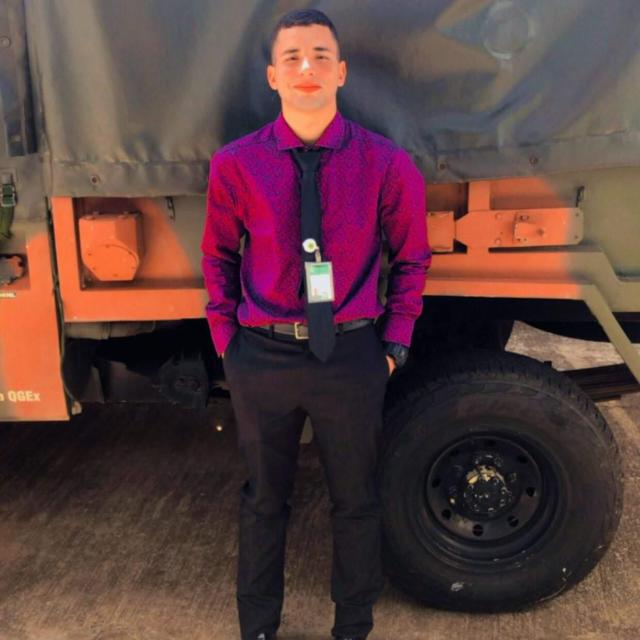

Codificação Avançada de Chaves Automotivas
Oferecemos serviços de codificação de chaves automotivas de última geração, essenciais para a segurança e funcionalidade dos sistemas eletrônicos dos veículos de luxo. Se você perdeu sua chave original ou precisa de uma chave reserva personalizada, garantimos que a nova chave será perfeitamente programada para interagir com o sistema de segurança do seu veículo, evitando qualquer risco de falha e mantendo a integridade do seu automóvel. Confie em nós para manter a segurança e a exclusividade do seu carro.

Cópia de Chaves de Carro de Alto Padrão
Evite imprevistos com chaves sob medida para o seu carro de luxo. Realizamos a duplicação de chaves automotivas, incluindo modelos tradicionais, eletrônicas e de proximidade, com precisão e tecnologia de ponta. Nossos serviços garantem que a cópia da chave seja totalmente compatível com o sistema de segurança do seu veículo, permitindo o uso sem falhas ou riscos. Para sua conveniência, oferecemos chaves personalizadas e de alto desempenho, feitas para proteger o seu patrimônio com a máxima confiança.

Atendimento de Chaveiro de Emergência 24h para Carros de Luxo
Oferecemos serviços de chaveiro de emergência 24 horas, exclusivos para carros de luxo e alto padrão. Seja você vítima de um imprevisto ou precise de ajuda para abrir seu veículo, nosso time especializado estará à disposição para resolver qualquer situação com eficiência e sem danificar seu carro. Trabalhamos com as ferramentas mais avançadas e técnicas especializadas, para garantir que seu automóvel seja atendido de forma cuidadosa e segura, sem comprometer a integridade de sistemas sofisticados como alarmes e chaveiros inteligentes.
Nossa Historia
A História da Key Fusion: Excelência e Confiança em Chaveiro Automotivo de Alto Padrão
A Key Fusion nasceu da paixão por carros de luxo e da necessidade de um serviço de chaveiro especializado para veículos de alto padrão. Ao perceber a falta de um atendimento exclusivo para esses automóveis sofisticados, fundamos a empresa com a missão de oferecer soluções precisas e seguras, com o mais alto nível de tecnologia e expertise. Desde o início, nossa proposta foi garantir a tranquilidade dos nossos clientes, oferecendo serviços como codificação de chaves eletrônicas, duplicação de chaves e atendimento emergencial 24h.
Com uma equipe altamente qualificada e investimento constante em ferramentas de ponta, rapidamente nos tornamos referência no mercado de chaveiros automotivos de luxo. Hoje, somos reconhecidos por nossa excelência, oferecendo um atendimento personalizado e soluções eficazes para cada necessidade, sempre com o compromisso de cuidar do seu carro como se fosse o nosso
A Key Fusion é mais do que um serviço de chaveiro: somos parceiros confiáveis que garantem a segurança e a proteção dos seus veículos de alto padrão, 24 horas por dia, com precisão e dedicação.
Avaliações
-

Excelente atendimento e serviços de chaveiro de alto nível. Garantiram a entrega rápida e a qualidade impecável no meu carro de luxo.
- 
A loja oferece soluções sofisticadas e personalizadas para chaves automotivas. Fiquei impressionado com a atenção aos detalhes e a eficiência no atendimento
-
Profissionais altamente capacitados e com equipamentos de última geração. A experiência foi incrível, recomendo a todos que buscam qualidade e precisão.
-
Atendimento exclusivo e rápido, com chaveiros automotivos de qualidade superior. Minha chave ficou perfeita, e o serviço foi além das minhas expectativas.
Faça seu Orçamento


SERVIÇOS DE EMERGÊNCIA
Em qualquer momento do dia ou da noite, a Key Fusion oferece serviços de chaveiro automotivo especializados para carros de luxo, com atendimento 24 horas. Se você perdeu sua chave, ficou trancado para fora ou enfrentou algum problema com o sistema de segurança do seu veículo de alto padrão, nossa equipe está pronta para ajudá-lo a resolver rapidamente qualquer emergência.
Trabalhamos com as tecnologias mais avançadas para garantir que o serviço seja realizado com precisão, sem danos ao seu carro. Nossos profissionais possuem vasta experiência em sistemas de segurança automotiva, incluindo chaves eletrônicas, de proximidade e até mesmo sistemas de ignição sofisticados.
Além disso, nosso atendimento é totalmente personalizado. Se você estiver em uma situação de emergência, não se preocupe, estaremos prontos para oferecer a solução necessária no local, 24 horas por dia, 7 dias por semana, com rapidez e eficiência. Nós entendemos o valor do seu carro de luxo e tratamos cada caso com o cuidado que ele merece.
-
PERGUNTAS E RESPOSTAS FREQUENTES
-
1. O que é um chaveiro automotivo de luxo?
Um chaveiro automotivo de luxo é um acessório premium, geralmente feito com materiais de alta qualidade, como couro, aço inoxidável, ouro ou até mesmo pedras preciosas. Ele serve para organizar e proteger as chaves do seu veículo de forma elegante e sofisticada.
-
2. Quais materiais são utilizados nos chaveiros automotivos de luxo?
Os chaveiros de luxo são feitos com materiais como couro legítimo, metal escovado, aço inoxidável, titânio, ouro, prata e detalhes em pedras preciosas ou cristais Swarovski.
-
3. Posso personalizar meu chaveiro automotivo de luxo?
Sim! Oferecemos opções de personalização, incluindo gravação do nome ou logotipo, escolha de cores e materiais, e até designs exclusivos para atender ao seu estilo único.
-
4. Como cuidar do meu chaveiro automotivo de luxo?
Para garantir a durabilidade do seu chaveiro, evite exposição prolongada à umidade, à luz direta do sol e ao calor excessivo. Use um pano macio e seco para limpeza e, se for de couro, recomendamos a aplicação de condicionador específico para o material.
-
5. O chaveiro é compatível com todos os modelos de veículos?
Sim, os chaveiros automotivos de luxo são projetados para serem universais, com capacidade para acomodar diferentes tipos de chaves de carro. Caso precise de um chaveiro específico para um modelo ou marca, podemos fornecer uma solução personalizada.
-
6. Posso usar o chaveiro para outras chaves além das do meu carro?
Claro! Você pode usar o chaveiro de luxo para guardar chaves de casa, escritório ou outros itens pessoais, mantendo sua organização com estilo.
-
7. O que diferencia um chaveiro automotivo de luxo dos chaveiros comuns?
A principal diferença é a qualidade dos materiais e o design sofisticado. Um chaveiro automotivo de luxo é pensado para proporcionar uma experiência de uso premium, além de ser um acessório de status.
-
8. Posso comprar um chaveiro de luxo como presente?
Sem dúvida! Os chaveiros automotivos de luxo são excelentes opções de presente para quem aprecia produtos de alta qualidade e estilo.
-
9. O chaveiro é resistente a quedas ou impactos?
Sim! Nossos chaveiros são fabricados com materiais de alta resistência. Embora não sejam indestrutíveis, eles foram projetados para suportar impactos do uso diário, mantendo a estética e a funcionalidade.
-
10. Como faço para comprar um chaveiro automotivo de luxo?
Você pode fazer a compra diretamente em nosso site, escolhendo entre os modelos disponíveis, ou entrando em contato com nossa equipe para encomendar um chaveiro personalizado conforme suas preferências.
Onde Estamos?
Estamos localizados no coração da cidade, oferecendo serviços especializados de chaveiro automotivo para carros de luxo. Nossa loja está equipada com a mais alta tecnologia para atender a todas as suas necessidades de segurança automotiva.
Com um atendimento personalizado e serviços 24 horas, garantimos que, em qualquer emergência, você terá um suporte imediato e especializado. Venha nos visitar ou entre em contato para saber mais sobre nossos serviços exclusivos para veículos de alto padrão.